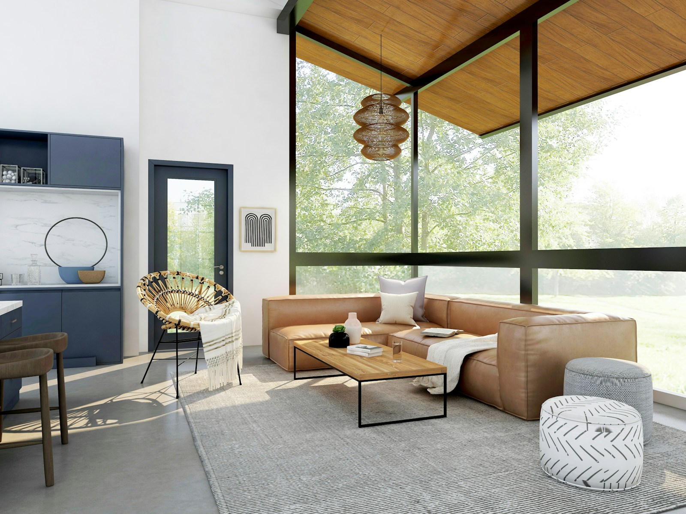

The photo is displaced into a real 3D mesh by its depth map and viewed through a perspective camera. It orbits gently on its own — drag or swipe left–right to look around. Vertical scrolling still pages.

Three.js · Depth Mesh · Real 3DBest results come straight from your renderer's Z-depth / depth pass. Or generate one from any image with assets/depth_gen.py, then point IMAGE_URL / DEPTH_URL at them.